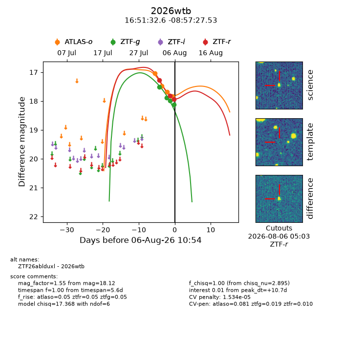
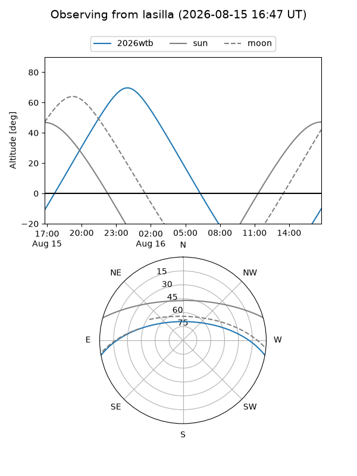
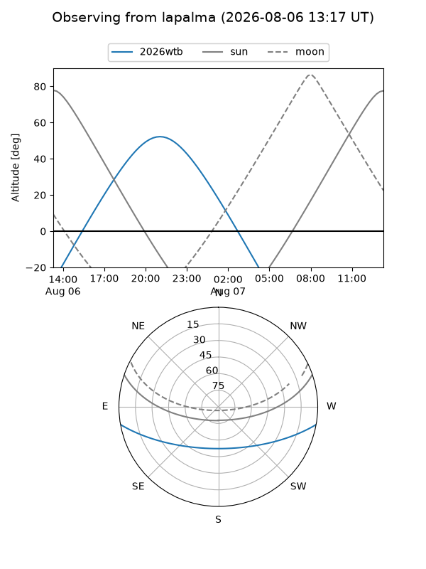
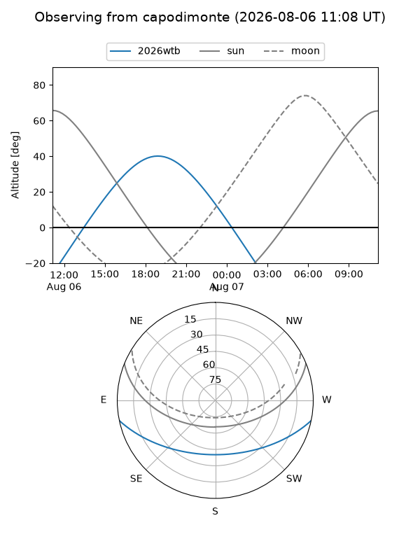
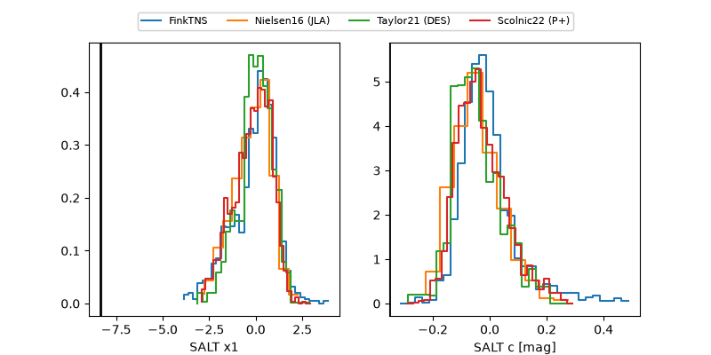

2026wtb
Target 2026wtb at 2026-08-06 10:57
Aliases and brokers:
FINK-ZTF: ztf.fink-portal.org/ZTF26ablduxl
Lasair-ZTF: lasair-ztf.lsst.ac.uk/objects/ZTF26ablduxl
ALeRCE-ZTF: alerce.online/object/ZTF26ablduxl
YSE-PZ: ziggy.ucolick.org/yse/transient_detail/2026wtb
TNS name: wis-tns.org/object/2026wtb
Direct TNS query: direct search
alt names
ZTF26ablduxl (ztf,fink_ztf)
2026wtb (tns,yse)
Coordinates:
equatorial (ra, dec) = 252.8859,-8.95765
equatorial (HMS+DMS) = 16:51:32.60,-08:57:27.53
galactic (l, b) = (9.9099,+21.60573)
Flags:
TNS type: nan
peak dt: +10.7
likely cv: !!
Photometry:
last atlaso=17.83, ztfg=18.12, ztfr=17.93
4 atlaso, 4 ztfg, 3 ztfr detections
Lightcurve

Visibility



Additional plots
